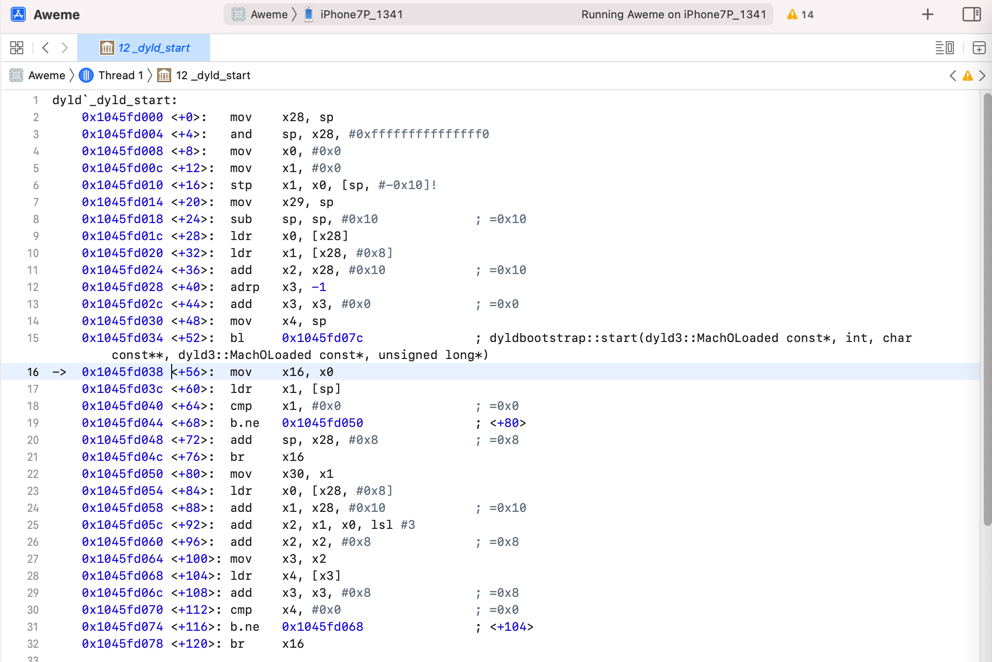
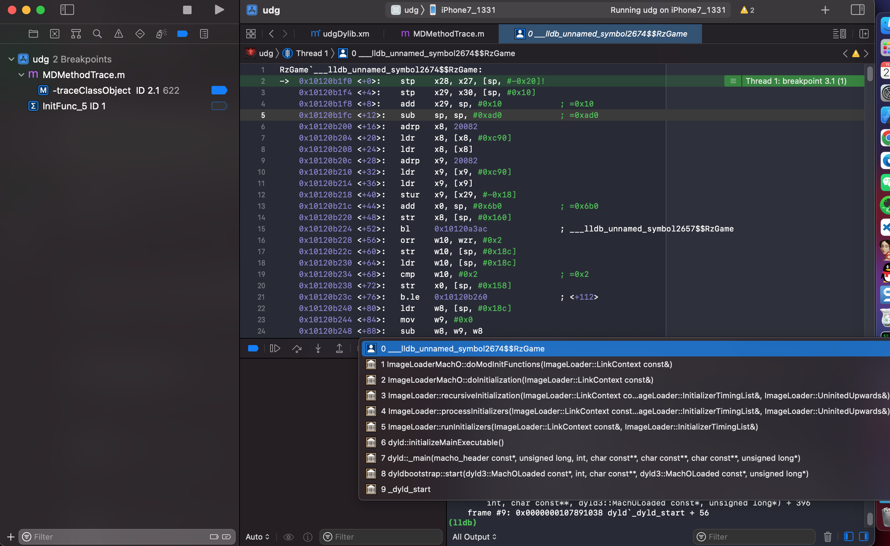
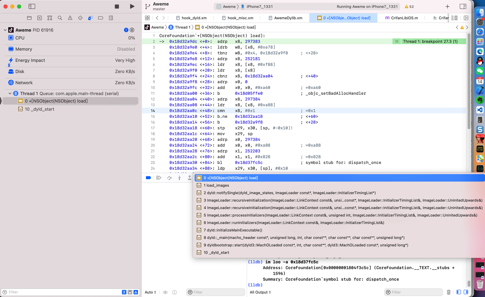

_dyld_start
dyld`_dyld_start==_dyld_start
反汇编代码

dyld`_dyld_start:
0x1045fd000 <+0>: mov x28, sp
0x1045fd004 <+4>: and sp, x28, #0xfffffffffffffff0
0x1045fd008 <+8>: mov x0, #0x0
0x1045fd00c <+12>: mov x1, #0x0
0x1045fd010 <+16>: stp x1, x0, [sp, #-0x10]!
0x1045fd014 <+20>: mov x29, sp
0x1045fd018 <+24>: sub sp, sp, #0x10 ; =0x10
0x1045fd01c <+28>: ldr x0, [x28]
0x1045fd020 <+32>: ldr x1, [x28, #0x8]
0x1045fd024 <+36>: add x2, x28, #0x10 ; =0x10
0x1045fd028 <+40>: adrp x3, -1
0x1045fd02c <+44>: add x3, x3, #0x0 ; =0x0
0x1045fd030 <+48>: mov x4, sp
0x1045fd034 <+52>: bl 0x1045fd07c ; dyldbootstrap::start(dyld3::MachOLoaded const*, int, char const**, dyld3::MachOLoaded const*, unsigned long*)
-> 0x1045fd038 <+56>: mov x16, x0
0x1045fd03c <+60>: ldr x1, [sp]
0x1045fd040 <+64>: cmp x1, #0x0 ; =0x0
0x1045fd044 <+68>: b.ne 0x1045fd050 ; <+80>
0x1045fd048 <+72>: add sp, x28, #0x8 ; =0x8
0x1045fd04c <+76>: br x16
0x1045fd050 <+80>: mov x30, x1
0x1045fd054 <+84>: ldr x0, [x28, #0x8]
0x1045fd058 <+88>: add x1, x28, #0x10 ; =0x10
0x1045fd05c <+92>: add x2, x1, x0, lsl #3
0x1045fd060 <+96>: add x2, x2, #0x8 ; =0x8
0x1045fd064 <+100>: mov x3, x2
0x1045fd068 <+104>: ldr x4, [x3]
0x1045fd06c <+108>: add x3, x3, #0x8 ; =0x8
0x1045fd070 <+112>: cmp x4, #0x0 ; =0x0
0x1045fd074 <+116>: b.ne 0x1045fd068 ; <+104>
0x1045fd078 <+120>: br x16
Mac中：
➜ ~ lldb
(lldb) process connect connect://192.168.0.58:20221
Process 10211 stopped
* thread #1, stop reason = signal SIGSTOP
frame #0: 0x0000000104b79000 dyld`_dyld_start
dyld`_dyld_start:
-> 0x104b79000 <+0>: mov x28, sp
0x104b79004 <+4>: and sp, x28, #0xfffffffffffffff0
0x104b79008 <+8>: mov x0, #0x0
0x104b7900c <+12>: mov x1, #0x0
Target 0: (Aweme) stopped.
(lldb)
某次调试：
dyld`_dyld_start:
0x1001b1000 <+0>: mov x28, sp
0x1001b1004 <+4>: and sp, x28, #0xfffffffffffffff0
0x1001b1008 <+8>: mov x0, #0x0
0x1001b100c <+12>: mov x1, #0x0
0x1001b1010 <+16>: stp x1, x0, [sp, #-0x10]!
0x1001b1014 <+20>: mov x29, sp
0x1001b1018 <+24>: sub sp, sp, #0x10 ; =0x10
0x1001b101c <+28>: ldr x0, [x28]
0x1001b1020 <+32>: ldr x1, [x28, #0x8]
0x1001b1024 <+36>: add x2, x28, #0x10 ; =0x10
0x1001b1028 <+40>: adrp x3, -1
0x1001b102c <+44>: add x3, x3, #0x0 ; =0x0
0x1001b1030 <+48>: mov x4, sp
0x1001b1034 <+52>: bl 0x1001b107c ; dyldbootstrap::start(dyld3::MachOLoaded const*, int, char const**, dyld3::MachOLoaded const*, unsigned long*)
-> 0x1001b1038 <+56>: mov x16, x0
涉及到的地方
load方法
0 +[XXObject load]
1 call_class_loads()
2 call_load_methods
3 load_images
4 dyld::notifySingle(dyld_image_states, ImageLoader const*)
11 _dyld_start
RzGame

(lldb) bt
* thread #1, queue = 'com.apple.main-thread', stop reason = breakpoint 3.1
* frame #0: 0x000000010120b1f0 RzGame`___lldb_unnamed_symbol2674$$RzGame
frame #1: 0x00000001078a61b8 dyld`ImageLoaderMachO::doModInitFunctions(ImageLoader::LinkContext const&) + 428
frame #2: 0x00000001078a658c dyld`ImageLoaderMachO::doInitialization(ImageLoader::LinkContext const&) + 52
frame #3: 0x00000001078a15d0 dyld`ImageLoader::recursiveInitialization(ImageLoader::LinkContext const&, unsigned int, char const*, ImageLoader::InitializerTimingList&, ImageLoader::UninitedUpwards&) + 548
frame #4: 0x00000001078a0334 dyld`ImageLoader::processInitializers(ImageLoader::LinkContext const&, unsigned int, ImageLoader::InitializerTimingList&, ImageLoader::UninitedUpwards&) + 184
frame #5: 0x00000001078a03fc dyld`ImageLoader::runInitializers(ImageLoader::LinkContext const&, ImageLoader::InitializerTimingList&) + 92
frame #6: 0x0000000107892420 dyld`dyld::initializeMainExecutable() + 216
frame #7: 0x0000000107896db4 dyld`dyld::_main(macho_header const*, unsigned long, int, char const**, char const**, char const**, unsigned long*) + 4616
frame #8: 0x0000000107891208 dyld`dyldbootstrap::start(dyld3::MachOLoaded const*, int, char const**, dyld3::MachOLoaded const*, unsigned long*) + 396
frame #9: 0x0000000107891038 dyld`_dyld_start + 56
AwemeCore

(lldb) bt
* thread #1, queue = 'com.apple.main-thread', stop reason = breakpoint 17.1
* frame #0: 0x0000000118786f7c XxxTweak.dylib`_logos_meta_method$_ungrouped$TTMacroManager$isDebug(self=<unavailable>, _cmd=<unavailable>) at hook_aweme.xm:414:5 [opt]
frame #1: 0x000000010956d818 AwemeCore`___lldb_unnamed_symbol142021$$AwemeCore + 28
...
frame #14: 0x000000010842c054 AwemeCore`+[AWELaunchMainPlaceholder load] + 84
frame #15: 0x00000001187872c8 MuJiaBaiHuoTweak.dylib`_logos_meta_method$_ungrouped$AWELaunchMainPlaceholder$load(self=AWELaunchMainPlaceholder, _cmd="load") at hook_aweme.xm:457:5 [opt]
frame #16: 0x000000018767c35c libobjc.A.dylib`load_images + 984
frame #17: 0x00000001025ba190 dyld`dyld::notifySingle(dyld_image_states, ImageLoader const*, ImageLoader::InitializerTimingList*) + 448
frame #18: 0x00000001025ca0d8 dyld`ImageLoader::recursiveInitialization(ImageLoader::LinkContext const&, unsigned int, char const*, ImageLoader::InitializerTimingList&, ImageLoader::UninitedUpwards&) + 512
frame #19: 0x00000001025ca05c dyld`ImageLoader::recursiveInitialization(ImageLoader::LinkContext const&, unsigned int, char const*, ImageLoader::InitializerTimingList&, ImageLoader::UninitedUpwards&) + 388
frame #20: 0x00000001025c8520 dyld`ImageLoader::processInitializers(ImageLoader::LinkContext const&, unsigned int, ImageLoader::InitializerTimingList&, ImageLoader::UninitedUpwards&) + 184
frame #21: 0x00000001025c85e8 dyld`ImageLoader::runInitializers(ImageLoader::LinkContext const&, ImageLoader::InitializerTimingList&) + 92
frame #22: 0x00000001025ba658 dyld`dyld::initializeMainExecutable() + 216
frame #23: 0x00000001025beeb0 dyld`dyld::_main(macho_header const*, unsigned long, int, char const**, char const**, char const**, unsigned long*) + 4400
frame #24: 0x00000001025b9208 dyld`dyldbootstrap::start(dyld3::MachOLoaded const*, int, char const**, dyld3::MachOLoaded const*, unsigned long*) + 396
frame #25: 0x00000001025b9038 dyld`_dyld_start + 56